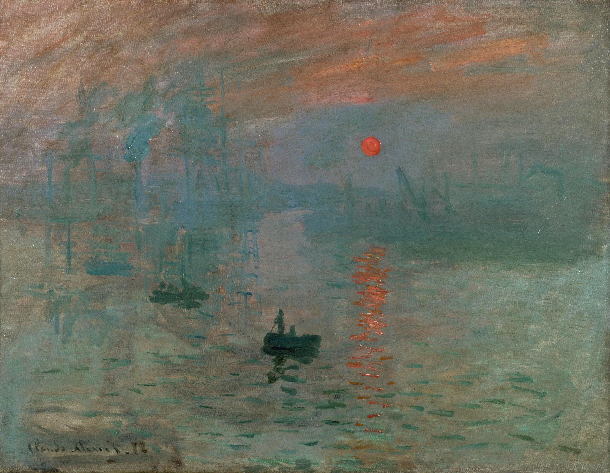

วิชาศิลปะ

จิตรกรรมฝาผนังไทยเป็นศิลปะที่มักปรากฏอยู่ภายในพระอุโบสถและระเบียงคดของวัด โดยเล่าเรื่องราวพุทธประวัติ ชาดก ไตรภูมิ และวรรณคดีเรื่องรามเกียรติ์ ตัวอย่างที่มีชื่อเสียงที่สุดคือ จิตรกรรมฝาผนังเรื่องรามเกียรติ์ที่ระเบียงคดวัดพระศรีรัตนศาสดาราม (วัดพระแก้ว) ซึ่งวาดต่อเนื่องกันยาว กว่า 1,900 เมตร ช่างไทยโบราณใช้สีฝุ่นผสมกาวและปิดทองคำเปลวในส่วนสำคัญ เช่น มงกุฎหรือปราสาทราชวัง เพื่อเพิ่มความสง่างาม การจัดวางภาพยังนิยมแบ่งเรื่องราวเป็นตอน ๆ ต่อเนื่องกันไปรอบผนัง สะท้อนทั้งคติความเชื่อทางศาสนาและวิถีชีวิตของคนไทยในอดีตไปพร้อมกัน